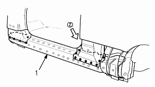
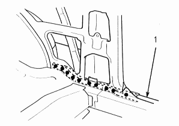
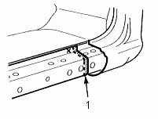
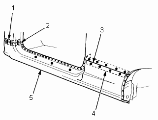
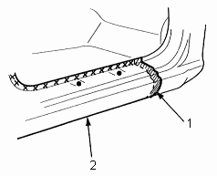

- Cut and set the new side sill reinforcement into position, and tack weld the clamped position.
- Cut the repaired part (outer panel) and set it into position. Clamp the repair part and check the body dimensions (see section 4).
- Temporarily install the door and front fender and check for differences in level and clearance. Make sure the body lines flow smoothly.
- Remove the repaired part and weld the centre pillar stiffener, side sill reinforcement and front pillar lower stiffener (driver's side).
Driver's side

- NEW SIDE SILL REINFORCEMENT
VIEW (Z)

- NEW SIDE SILL REINFORCEMENT
| |
Passenger's side
When replacing the side sill reinforcement, cut the new side sill reinforcement so it overlaps the body side reinforcement by 20 mm (1.8 in.), and fillet weld it.

- Fillet welding
Overlap
20 mm (1.8 in.)
- Clamp the repair part and recheck the clearance and alignment of the door and front fender.
- Perform the main welding:
- Attach a patch at the cut section of the front pillar (driver's side) center pillar and wheel arch and plug weld them.
Driver's side

- PATCH
- Butt welding
- Butt welding
- PATCH
- OUTER PANEL
Passenger's side:

- Fillet welding
Overlap
30 mm (1.2 in.)
- OUTER PANEL
|